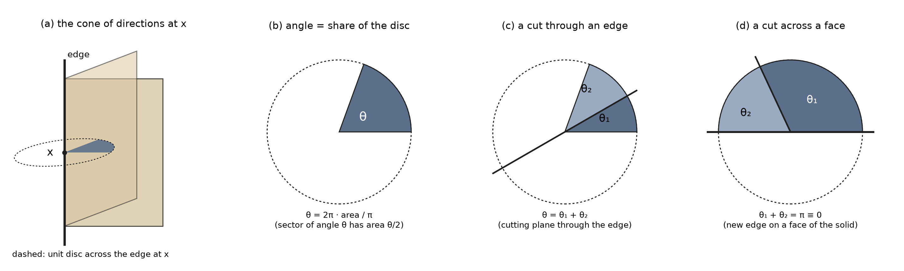
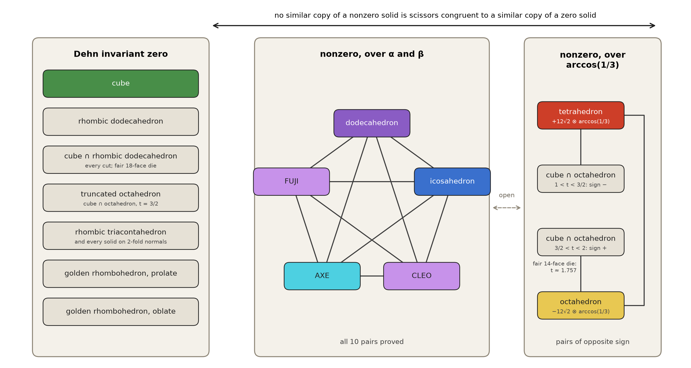
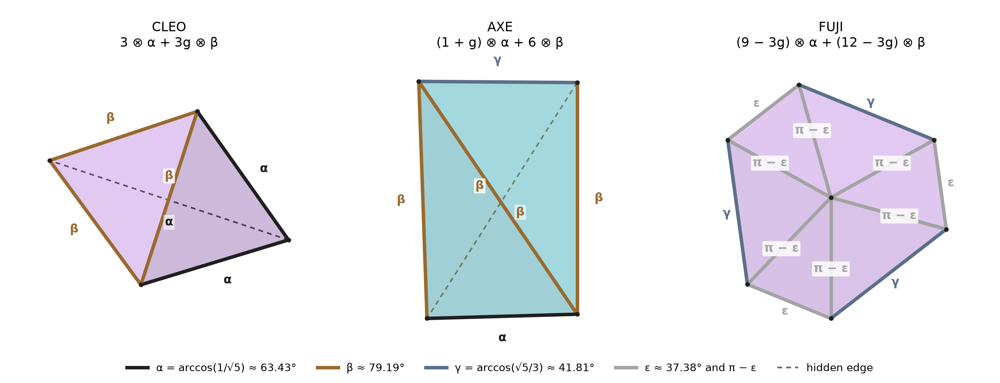

A machine-checked canon: the Dehn invariant read from the solid itself, kept by every convex dissection, and deciding CLEO, AXE, FUJI, the dodecahedron and the icosahedron pairwise
sorry and only the three standard axioms. Each result is marked Lean (machine-checked), by hand or numerical.Cut a solid with a saw into pieces, move the pieces, and put them together into another solid: the volume stays the same. In the plane the converse holds: two polygons of the same area can always be cut into each other (Wallace, Bolyai, Gerwien). Hilbert asked in 1900 whether the same is true in space, his third problem [2]. Dehn answered no, in a note of the same year [28] and in full in the Mathematische Annalen [1]: he found a quantity besides volume that cutting cannot change, and showed that the regular tetrahedron and the cube differ in it. Sydler proved in 1965 that volume and Dehn's quantity together decide the question [3]; Jessen gave the invariant its tensor form [4]. The theory is told at book length by Boltianskii [23], Sah [24] and Dupont [25]; Benko gives a short elementary proof of Dehn's theorem [26], and Campbell and Zakharevich study scissors congruence through algebraic K-theory [27].
This paper puts Dehn's direction into a proof assistant, Lean 4 with the Mathlib library [5, 6], and builds on it a canon: a table of named solids, each proved to have invariant zero (it can be said in cubes, in DICTO's shape language) or not, with every non-congruence between them that the invariant alone decides. The canon was DICTO's plan: "Dehn's own theorem in Lean could prove to be the backbone". What this paper adds is the machine check and the canon built on it, not the mathematics of Dehn, Jessen and Sydler; §9 lists what was found elsewhere.
How results are marked. Lean: the statement as written is a theorem of the Lean files, compiled with no sorry and only the axioms propext, Classical.choice and Quot.sound (§7). By hand: a proof on paper, not machine-checked. Numerical: high-precision computation, not a proof. Throughout, g = (√5 − 1)/2 = 1/φ.
The whole paper fits into one statement: the invariant is defined from the solid alone, cutting cannot change it, and it separates the solids of the canon as follows.
Theorem 1 (the machine-checked canon). Lean. Let dehnSet be the Dehn invariant of a subset of ℝ³ read from the set itself (Definition 1).
(a) The bridge. If P and Q are convex polytopes and P is cut into finitely many convex polytopes that, moved by isometries, fill Q (Definition 2), then dehnSet P = dehnSet Q. For finite unions of convex polytopes with disjoint interiors the sum over the pieces does not depend on the dissection and is kept in the same way.
(b) Dehn's theorem. No similar copy of the regular tetrahedron is scissors congruent to a similar copy of the cube.
(c) Zero. The cube, the rhombic dodecahedron, every solid {|xi| ≤ s, |xi ± xj| ≤ c} (the cube ∩ rhombic dodecahedron line, with the fair 18-face die), the truncated octahedron, the rhombic triacontahedron and both golden rhombohedra have dehnSet = 0.
(d) Nonzero. The dodecahedron, the icosahedron, the tetrahedron, the octahedron, every solid {|xi| ≤ 1, |x| + |y| + |z| ≤ t} with 1 < t < 2 and t ≠ 3/2 (the fair 14-face die, Lucky 7, among them) and CLEO, AXE and FUJI have dehnSet ≠ 0. No similar copy of one of them is scissors congruent to a similar copy of a solid in (c).
(e) The golden family. No similar copy of one of CLEO, AXE, FUJI, the dodecahedron and the icosahedron is scissors congruent to a similar copy of another.
(f) Across the two families. No similar copy of the octahedron, the tetrahedron or a solid of (d) on the cube ∩ octahedron line is scissors congruent to a similar copy of one of the five solids of (e).
(g) The canon complete. Every two different nonzero solids of the canon are not scissors congruent: no similar copy of one solid of (d) is scissors congruent to a similar copy of another, two members of the cube ∩ octahedron line with different t included.
(h) Hilbert's question in his words. On the triangle A = (0, 0, 0), B = (1, 0, 0), C = (0, 1, 0) stand the tetrahedra with apexes D = (0, 0, 1) and D′ = (0, 1, 1): the same base, equal altitudes 1, volume 1/6 each, and they are neither scissors congruent nor equicomplementable (Definition 3).
(i) The classical edge sum. For every convex polytope P with interior points, dehnSet P is the sum over the edges of P of length ⊗ dihedral angle, the edges and the angles read from P as a set.
Proof. (a) is Theorem 4 and Corollary 4′, (b) Theorem 6, (c) Theorem 7, (d) Theorem 8 and Corollary 9, (e) Theorem 13, (f) Theorems 15 and 16, (g) (e), (f) and Theorem 14 (canon_complete, study 9), (h) Theorem 6′, (i) Theorem 6″. ∎
At a point on an edge of a solid, look along the edge: the solid fills a wedge of the view, and the wedge's opening is the dihedral angle. We measure that opening by area, so that nothing about edges has to be told to the computer: it reads them off the set.
Definition 1 (Lean study 2, Dehn2Local.lean). For a set P ⊂ ℝ³ and a point x of P, the cone of directions at x is the set of v with x + tv ∈ P for some t > 0. Its edge line K is the span of the directions v with v and −v both in the cone. When K is a line, the wedge angle is 2π × (area of the cone inside the unit disc of the plane perpendicular to K) / (area of that disc), and the angle class of x is this angle modulo ℚπ, the rational multiples of π; at every other point the class is 0. The Dehn invariant is
dehnSet P = Σθ (one-dimensional Hausdorff measure of the points of class θ) ⊗ θ ∈ ℝ ⊗ℚ (ℝ/ℚπ),
the sum over the finitely many classes that occur (Jessen's space [4]).

On a face of the solid the cone is a half-space, so the edge line is a plane, not a line, and the class is 0; inside, the cone is everything; at a corner, the edge line is a point. So only edge points count, with their angle; at a point where a cutting plane crosses an edge the length is zero. The first lemma says that the angle measured by area is the usual dihedral angle.
Lemma 2 (the angle of two faces). Lean (volume_sector, wedgeAngle_two_planes, study 3). For two half-spaces with linearly independent outward normals a1, a2, the wedge angle of their intersection is π − angle(a1, a2).
Proof (outline). An orthonormal pair in the plane across the edge, symmetric about the wedge, carries that plane onto ℂ by a linear isometry, which keeps area; the wedge becomes the sector between −β and β, of area β by polar coordinates (Mathlib's Complex.lintegral_comp_polarCoord_symm), the disc has area π (Complex.volume_ball), and π − angle(a1, a2) = 2β. ∎
Cutting a solid in two along a plane splits each old edge angle into two parts that add up, and every new edge made by the cut has angles adding up to a straight angle, which the invariant does not see. That is the whole idea, and it is the textbook argument (Hartshorne [20, §27, Proposition 27.2], there for two solids glued along faces: an edge joined in angle, an edge joined in length, or an edge swallowed into a face); the work is in proving it for every polytope and every plane.
Lemma 3 (one plane cut). Lean (study 2: wedgeAngle_split, wedgeAngle_mem_ratPi_of_line, dehnSet_cut). (i) A plane through the edge line cuts the cone in two whose wedge angles add up to the cone's. (ii) A cone that contains a whole line of the perpendicular plane has angle 0, π or 2π. (iii) For every convex polytope P (a bounded intersection of finitely many closed half-spaces) and every plane, dehnSet P = dehnSet(P ∩ one side) + dehnSet(P ∩ other side).
Definition 2 (ScissorsCongruent, study 2). P and Q are scissors congruent when P is the union of finitely many convex polytopes pk with pairwise disjoint interiors and Q is the union of their images gk(pk) under isometries gk of ℝ³ (reflections allowed), also with pairwise disjoint interiors.
Theorem 4 (the bridge). Lean (dehnSet_eq_of_scissorsCongruent, dehn_bridge_R3, study 2). Scissors-congruent convex polytopes in ℝ³ have the same Dehn invariant.
theorem dehnSet_eq_of_scissorsCongruent {P Q : Set E} (hP : IsPoly P) (hQ : IsPoly Q)
(h : ScissorsCongruent P Q) : dehnSet P = dehnSet QProof (outline). dehnSet is unchanged by every isometry (dehnSet_image). A function additive under every single plane cut of a convex polytope is additive over every dissection of a convex polytope into convex polytopes (dissection_additive, the common-refinement argument: cut along all the facet planes of all the pieces, in any finite dimension and for any group-valued function; that additivity under single cuts extends to dissections and finite unions is classical valuation theory, Hadwiger [21] and Groemer [22]), and such a function vanishes on flat polytopes (flat_of_cut). With Lemma 3 (iii) both sides equal Σ dehnSet pk. ∎
Corollary 4′ (finite unions). Lean (dehnSum_eq_of_same_union, dehnSum_eq_of_scissors). For a solid that is a finite union of convex polytopes with disjoint interiors, Σ dehnSet over the pieces does not depend on the dissection, and is the same for scissors-congruent such solids.
The link back to the textbook formula is also proved: for a polytope given by half-spaces, dehnSet equals the sum of length ⊗ angle over an explicit edge list, one entry for each set of faces meeting in a line (dehnSet_eq_dehn_edgeList, study 2). An optional file shows that these polytopes are exactly the convex hulls of finite point sets in ℝ³ (isPoly_iff_convexHull), using the Minkowski–Weyl theorem Chapter10.isConvexPolytope_iff of FormalBook [7], credited in the file.
Dehn's theorem now needs only two evaluations: the cube's angles are all right angles, which the invariant does not see, and the tetrahedron's angle arccos(1/3) is not a rational part of a turn.
Lemma 5 (scaling). Lean (dehnSet_smul_set, dehnSet_similarCopy, study 4). dehnSet(aP) = a · dehnSet P for a > 0; for a similar copy Q = g(aP), g an isometry, dehnSet Q = a · dehnSet P.
Theorem 6 (Dehn's theorem). Lean (tetra_not_scissorsCongruent_cube, study 3; similarTetra_not_scissorsCongruent_similarCube, study 4). The regular tetrahedron with corners (−1, −1, −1), (1, 1, −1), (1, −1, 1), (−1, 1, 1) has dehnSet = 6 · 2√2 ⊗ arccos(1/3) ≠ 0, every cube [−s, s]³ has dehnSet = 0, and no similar copy of the one is scissors congruent to a similar copy of the other.
theorem similarTetra_not_scissorsCongruent_similarCube {T Q : Set R3}
(hT : IsSimilarCopy tetraSet T) (hQ : IsSimilarCopy (cubeSet 1) Q) : ¬ ScissorsCongruent T QProof (outline). By Lemma 2 every edge point of the cube has angle π/2, class 0. For the tetrahedron the points with class arccos(1/3) are exactly its six open edges, each of Hausdorff length 2√2 (tet_openSegment_iff, tetra_edge_measure). arccos(1/3) is not a rational multiple of π by Niven's theorem (Mathlib's niven, by Meiburg and Broshi [8]; Niven [9]), so L ⊗ arccos(1/3) ≠ 0 for L ≠ 0 (a ℚ-linear functional separates it, edgeTerm_ne_zero). Theorem 4 and Lemma 5 finish. ∎
Hilbert asked for "two tetrahedra of equal bases and equal altitudes which can in no way be split up into congruent tetrahedra, and which cannot be combined with congruent tetrahedra to form two polyhedra which themselves could be split up into congruent tetrahedra" [2]. Theorem 6 answers with a tetrahedron and a cube; here both halves of the sentence are proved as written, for two tetrahedra on one base. The pair is Examples 2 and 3 of Aigner and Ziegler [18] (their T1 and T2), placed on one triangle.
Definition 3 (EquiComplementable, study 10). Convex polytopes P and Q are equicomplementable when there are finitely many convex polytopes ck and isometries gk such that the ck have interiors disjoint from each other and from that of P, the gk(ck) have interiors disjoint from each other and from that of Q, and P ∪ ⋃ ck is scissors congruent to Q ∪ ⋃ gk(ck) (Definition 2).
Theorem 6′ (Hilbert's question). Lean (hilbert_third_problem, dehnSet_eq_of_equiComplementable, hil_height_corner, hil_height_ortho, volume_cornerTet, volume_orthoTet, dehnSet_cornerTet, dehnSet_orthoTet, study 10). (i) Equicomplementable convex polytopes have the same Dehn invariant. (ii) Let A = (0, 0, 0), B = (1, 0, 0), C = (0, 1, 0), D = (0, 0, 1), D′ = (0, 1, 1), and let T and T′ be the convex hulls of A, B, C, D and of A, B, C, D′. Both apexes are at distance 1 from the plane through A, B, C, both volumes are 1/6, dehnSet T = 3√2 ⊗ arccos(1/√3) ≠ 0 and dehnSet T′ = 0. Hence T and T′ are neither scissors congruent nor equicomplementable.
theorem hilbert_third_problem :
∃ A B C D D' : R3,
Metric.infDist D (affineSpan ℝ ({A, B, C} : Set R3) : Set R3) = 1 ∧
Metric.infDist D' (affineSpan ℝ ({A, B, C} : Set R3) : Set R3) = 1 ∧
volume (convexHull ℝ ({A, B, C, D} : Set R3)) = ENNReal.ofReal (1 / 6) ∧
volume (convexHull ℝ ({A, B, C, D'} : Set R3)) = ENNReal.ofReal (1 / 6) ∧
¬ ScissorsCongruent (convexHull ℝ ({A, B, C, D} : Set R3)) (convexHull ℝ ({A, B, C, D'} : Set R3)) ∧
¬ EquiComplementable (convexHull ℝ ({A, B, C, D} : Set R3))
(convexHull ℝ ({A, B, C, D'} : Set R3))Proof (outline). (i) Corollary 4′ applied to the two enlarged solids, each cut as the solid together with the added pieces; the added pieces have the same invariant on both sides (dehnSet_image) and cancel. (ii) Altitudes. The plane through A, B, C is {z = 0}; a point with z = 1 is at distance at least 1 from it, and the feet A and C are at distance 1. Volumes. T is the corner simplex {u ≥ 0, u0 + u1 + u2 ≤ 1}, an eighth of the octahedron of radius 1 (the halvings of Theorem 14 (ii)): (4/3)/8 = 1/6. The shear (u0, u1, u2) ↦ (u0, u1 + u2, u2), of determinant 1, carries T onto T′: Cavalieri's principle in this one case. Invariants. T has three edges of length 1 at angle π/2 and three of length √2 at arccos(1/√3) = 54.73…°; since 2 arccos(1/√3) = π − arccos(1/3), arccos(1/√3) ∉ ℚπ by Niven's theorem. T′ has edges AB of length 1 at π/4, AC of length 1 at π/2, AD′ and BC of length √2 at π/2, BD′ of length √3 at π/3 and CD′ of length 1 at π/4; its face normals (1, 1, 0), (−1, 0, 0), (0, −1, 1), (0, 0, −1) make angles in ℚπ two by two, so Theorem 7 (i) gives 0 with no edge list. Theorem 4 and (i) finish. ∎ The pieces of a dissection are convex polytopes moved by isometries, reflections included, where Hilbert speaks of congruent tetrahedra; "equal bases" holds as the same triangle.
The invariant of Definition 1 is read from the solid through cones and areas. The next theorem shows that it is the classical invariant, Dehn's sum over the edges [1] in Jessen's form [4], with the edges, the facets and the angles also read from the set. For a convex set P and a vector n, the face of P in direction n is the set of points of P where ⟨n, ·⟩ is largest. An edge of P is an exposed face (Mathlib's IsExposed) that is a segment with two different ends. The facet normals at an edge F are the unit vectors n whose face contains F and is not contained in a line, and the dihedral angle at F is π minus the largest angle between two facet normals at F.
Theorem 6″ (the classical edge sum). Lean (dehnSet_eq_edge_sum, IsEdge.facetNormals_eq_pair, edges_finite, IsEdge.length, study 10). Let P be a convex polytope with interior points in a 3-dimensional real inner product space. Then P has finitely many edges; through each edge pass exactly two facets, with linearly independent outward unit normals n1, n2, and the dihedral angle is π − angle(n1, n2), strictly between 0 and π; the length of the edge from u to v is |u − v|; and
dehnSet P = Σedges F (length of F) ⊗ (dihedral angle at F).
theorem dehnSet_eq_edge_sum {P : Set E} (hP : IsPoly P) (hint : (interior P).Nonempty) :
dehnSet P = ∑ᶠ F ∈ edges P,
(μH[1] F).toReal ⊗ₜ[ℚ] (Submodule.Quotient.mk (dihedral P F) : Angle)
theorem IsEdge.facetNormals_eq_pair {P F : Set E} (hP : IsPoly P) (hint : (interior P).Nonempty)
(hF : IsEdge P F) :
∃ n₁ n₂ : E, LinearIndependent ℝ ![n₁, n₂] ∧ facetNormals P F = {n₁, n₂} ∧
dihedral P F = π - InnerProductGeometry.angle n₁ n₂ ∧ 0 < dihedral P F ∧ dihedral P F < πProof (outline). The half-space description that witnesses that P is a polytope may be redundant in every way (repeated constraints, constraints never tight or tight only along an edge or at a corner, zero normals); no general position is assumed. Study 4 writes dehnSet P as a sum over the sets S of constraints: (length of the points where exactly S is tight) ⊗ (angle class of the cone of S). A set S contributes only if the directions along which every constraint of S stays tight form a line, and S is the tight set of some point x. For such S, the points where at least S is tight form a segment through x (a compact connected set of parameters on the line through x, containing a neighbourhood of 0), exposed by the sum of the normals of S: an edge. Every edge arises so, from the tight set of its midpoint, and different such S give different edges, so the sum is re-indexed over the edges. The normals of S lie in the plane across the edge and, because P has an interior point, on one side of a line; two extreme ones cut out the whole cone (two_extreme, study 4), and Lemma 2 gives the angle π − angle(n1, n2). Scaled to length 1 these two are facet normals, and any other facet normal at the edge is a combination of them with coefficients ≥ 0 whose face would lie on the edge line if both were positive. ∎ The cutting argument of Hartshorne [20, §27] is not used here.
A solid has invariant zero when all its edge angles cancel out, either because each is a rational part of a turn or because the edge lengths balance. Two general tools do the evaluations: one theorem for solids whose face normals make rational angles with each other, and one edge reading for solids given by their corners and faces.
Theorem 7 (the zero solids). Lean (studies 4 and 7). (i) Every solid cut out by finitely many half-spaces whose normals make, two by two, angles in ℚπ has dehnSet = 0, for every choice of offsets; no edge list is needed (dehnSet_sol_eq_zero_of_rational). (ii) Hence zero for: the cube; every cube ∩ rhombic dodecahedron solid, for all s and c, the rhombic dodecahedron and the fair 18-face die (study 2026-11-18-fair-32-die) among them (dehnSet_cubeRD, dehnSet_rd; the 18 normals checked pairwise, 324 pairs); every solid whose face normals are among the 30 two-fold axes of the icosahedral group (dehnSet_rtFamily; 900 pairs over ℤ[√5]), so the rhombic triacontahedron and both golden rhombohedra, each proved equal to the parallelepiped on three five-fold axes (goldProlateSet_eq, goldOblateSet_eq). (iii) The truncated octahedron, whose two angles are not in ℚπ, is zero by its edges: see Theorem 8 (iii).
Every angle between two two-fold axes of the icosahedron is a multiple of 36° or of 60°, so the dihedral angles of the golden rhombohedra (72° and 108°, 36° and 144°) and of the rhombic triacontahedron (144°) are rational in π, and (i) applies with no edge list.
Theorem 8 (the nonzero solids and their values). Lean (studies 3, 4, 5 and 7; edge reading IsEdgeData.dehnSet_eq, study 5). With α = arccos(1/√5) and γ = arccos(√5/3):
(i) dodecahedron with corners (±2, ±2, ±2) and the cyclic permutations of (0, ±(1 + √5), ±(√5 − 1)): dehnSet = −30(2√5 − 2) ⊗ α (dihedral angle π − α) (dehnSet_dod);
(ii) icosahedron with corners the cyclic permutations of (0, ±2, ±(1 + √5)): dehnSet = −120 ⊗ γ (dihedral angle π − γ, edge 4) (dehnSet_ico);
(iii) tetrahedron: 12√2 ⊗ arccos(1/3) (Theorem 6); octahedron |x| + |y| + |z| ≤ 1: −12√2 ⊗ arccos(1/3) (dehnSet_oct); the cube ∩ octahedron line, 1 < t < 2: 12√2(2t − 3) ⊗ arccos(1/3) (dehnSet_co), zero exactly at t = 3/2, the truncated octahedron (dehnSet_truncOct), and nonzero for every other t, in particular for 7/4 < t < 9/5, which holds the fair 14-face die, Lucky 7, at t = 1.7566… [10] (dehnSet_luckySeven_ne_zero);
(iv) CLEO, AXE and FUJI: Table 2 and Theorem 11.
Each is nonzero (dehnSet_*_ne_zero).
Proof (outline). The edge reading needs, for each solid, its corner–face table and, for each pair of faces, a certificate that the points of the solid on both faces form the edge between two corners, or a single corner, or nothing (a Farkas combination). These tables and certificates were written by two generators in exact arithmetic over ℚ and ℚ(√5) and are all checked again by Lean. On the cube ∩ octahedron line the square–hexagon edges have angle π − arccos(1/√3) and length √2(t − 1), the hexagon–hexagon edges π − arccos(1/3) and √2(2 − t); since 2 arccos(1/√3) = π − arccos(1/3) the two kinds combine into one class. Nonzero: arccos(1/3) and α by Niven's theorem (cos 2α = −3/5 is rational); γ by Proposition 10 and Theorem 12. ∎
| solid | dehnSet | Lean theorem | study |
|---|---|---|---|
| dodecahedron | −30(2√5 − 2) ⊗ α | dehnSet_dod | 7 |
| icosahedron | −120 ⊗ γ = −120 ⊗ α − 240 ⊗ β | dehnSet_ico | 7 |
| cube [−s, s]³ | 0 | dehnSet_cube | 3 |
| tetrahedron | 12√2 ⊗ arccos(1/3) | dehnSet_tetra | 3 |
| octahedron | −12√2 ⊗ arccos(1/3) | dehnSet_oct | 7 |
| rhombic dodecahedron | 0 | dehnSet_rd | 7 |
| cube ∩ rhombic dodecahedron, all s, c (fair 18-face die) | 0 | dehnSet_cubeRD, dehnSet_fairDie18 | 4 |
| truncated octahedron (t = 3/2) | 0 | dehnSet_truncOct | 7 |
| rhombic triacontahedron; any solid on two-fold normals | 0 | dehnSet_rt, dehnSet_rtFamily | 7 |
| golden rhombohedra, prolate and oblate | 0 | dehnSet_goldProlate, dehnSet_goldOblate | 7 |
| cube ∩ octahedron, 1 < t < 2 (Lucky 7: 7/4 < t < 9/5) | 12√2(2t − 3) ⊗ arccos(1/3) | dehnSet_co | 7 |
| CLEO | 3 ⊗ α + 3g ⊗ β | dehn_cleo_alpha_beta | 4, 5 |
| AXE | (1 + g) ⊗ α + 6 ⊗ β | dehn_axe_alpha_beta | 4, 5 |
| FUJI | (9 − 3g) ⊗ α + (12 − 3g) ⊗ β | dehn_fuji_alpha_beta | 5 |
Corollary 9 (zero against nonzero). Lean (zeroWords, nonzeroWords, canon_not_scissorsCongruent, study 7). No similar copy of a nonzero solid of Table 1 is scissors congruent to a similar copy of a zero solid. ∎ (Lemma 5 and Theorem 4.)
Lean's canon_table (study 8) states Corollary 9, Theorem 13 and Theorem 16 (§7) as one theorem; canon_complete (study 9) adds Theorem 14 as a fourth part, so every two different nonzero solids of Table 1 are decided.
DICTO's CLEO, AXE and FUJI [11] are pieces cut from the dodecahedron and the icosahedron. Their edges use four different angles, but these four are tied by two exact relations, so every invariant in the golden family is a combination of just two angles. Then two such invariants decide each pair, as two vectors in a plane do.

| word | faces | edges: number × length at angle |
|---|---|---|
| CLEO | 4 | 3 × 1 at α = 63.43…°; 3 × g at β = 79.18…° |
| AXE | 4 | 1 × g at α; 4 × 1 at β; 1 × 1 at γ = 41.81…° |
| FUJI | 7 | 6 × 1 at π − ε = α + β = 142.62…° (at the apex); 3 × 1 at γ; 3 × g at ε = 37.37…° (round the hexagon) |
Proposition 10 (the angle relations). Lean (word_angle_sum, word_angle_relation, wordEps_eq, study 5). As real numbers, α + β + ε = π, α + 2β − γ = π and ε = β − γ.
Proof. With r = √(3(10 − 2√5)): cos β = (3 − √5)/r, sin β = 4/r, cos ε = (√5 + 1)/r, sin ε = (2√5 − 2)/r, cos α = √5/5, sin α = 2√5/5, cos γ = √5/3, sin γ = 2/3. The addition formula gives cos(γ + ε) = cos β and cos(α + β) = −cos ε; all four angles lie in [0, π/2] (their cosines are ≥ 0), so both sums lie in [0, π], where arccos ∘ cos is the identity. ∎
Theorem 11 (the words over two angles). Lean (dehnSet_cleo, dehnSet_axe, dehnSet_fuji; dehn_cleo_alpha_beta, dehn_axe_alpha_beta, dehn_fuji_alpha_beta, studies 4 and 5). In ℝ ⊗ℚ (ℝ/ℚπ):
CLEO = 3 ⊗ α + 3g ⊗ β, AXE = (1 + g) ⊗ α + 6 ⊗ β, FUJI = (9 − 3g) ⊗ α + (12 − 3g) ⊗ β,
and each is nonzero.
Proof. The edge lists are read from the solids (CLEO and AXE as tetrahedra, IsTetraData.dehnSet_eq; FUJI by the edge reading, its 21 pairs of faces certified one by one); then modulo π, γ ≡ α + 2β and π − ε ≡ α + β by Proposition 10. Nonzero: in each word the coefficient of α is not a rational multiple of the coefficient of β (√5 is irrational), so a ℚ-linear map on lengths that kills the β-coefficient leaves a nonzero multiple of α, and α ∉ ℚπ by Niven's theorem (tmul_add_tmul_ne_zero). ∎
To compare two words, a nonzero invariant alone is not enough: one must know that α and β cannot be traded for each other modulo π.
Theorem 12 (α and β are independent modulo π). Lean (word_angles_int_indep, wordAnglesIndep, study 6). If pα + qβ is a rational multiple of π with integers p, q, then p = q = 0.
theorem word_angles_int_indep (p q : ℤ) (h : (p : ℝ) * wordAlpha + q * wordBeta ∈ ratPi) :
p = 0 ∧ q = 0Proof. A relation gives integers with P·2α + Q·2β = m·2π, so cos(2jβ) = cos(2kα) with j = |Q|, k = |P|. By the Chebyshev recurrence, 2·5k cos(2kα) = dk is an integer (cos 2α = −3/5), and 2·15j cos(2jβ) = aj + bj√5 with integers aj, bj (cos 2β = −(10 + 8√5)/30). Then 5k(aj + bj√5) = 15jdk; as √5 is irrational, for j ≥ 1 this forces bj = 0 and 3 | aj, so 3 | aj² − 5bj². But the step (a, b) ↦ (−10a − 40b, −8a − 10b) multiplies the norm a² − 5b² by −220 modulo 225, and the first value is −220, so 3 never divides it. Hence Q = 0, and then P = 0 because α ∉ ℚπ (Niven). ∎ The idea is classical: a relation would make a product of powers of e2iα and e2iβ a root of unity, and e2iβ is not a unit at a prime above 3; the recurrence reads that valuation from real parts only. On paper the independence follows directly from Conway, Radin and Sadun [12]: Proposition 10 (α + 2β − γ = π) gives β = (π + γ − α)/2, so a relation between α and β modulo π is one between α and γ, which [12] excludes (also [13, Lemma 2]); with θ = arccos(1/3) the same substitution gives Theorem 15 from the independence of θ, α and γ in [12]. The mathematics is therefore known; what is claimed for Theorem 12 is the machine-checked proof and its integer-recurrence route (§9).
Theorem 13 (the golden family is pairwise apart). Lean (study 6: Unconditional.cleo_axe_not_scissorsCongruent, …cleo_fuji…, …axe_fuji…; study 7: dod_ico_…, dod_cleo_…, dod_axe_…, dod_fuji_…, ico_cleo_…, ico_axe_…, ico_fuji_…). No similar copy of one of the dodecahedron, the icosahedron, CLEO, AXE and FUJI is scissors congruent to a similar copy of another, in any sizes and positions.
theorem Unconditional.cleo_axe_not_scissorsCongruent {C A : Set R3}
(hC : IsSimilarCopy cleoSet C) (hA : IsSimilarCopy axeSet A) : ¬ ScissorsCongruent C A
theorem dod_ico_not_scissorsCongruent {D I : Set R3} (hD : IsSimilarCopy dodSet D)
(hI : IsSimilarCopy icoSet I) : ¬ ScissorsCongruent D IProof. Over the independent α and β each invariant is a vector of two coefficients, and two invariants that are real multiples of each other have proportional vectors (not_proportional). The ten determinants are nonzero (Table 3); Lemma 5 and Theorem 4 finish. ∎
| pair | determinant | pair | determinant |
|---|---|---|---|
| CLEO – AXE | 15 | icosahedron – CLEO | 720 − 360g |
| CLEO – FUJI | 45 − 45g | icosahedron – AXE | −480 + 240g |
| AXE – FUJI | 30g − 45 | icosahedron – FUJI | 720 − 360g |
| dodecahedron – icosahedron, CLEO, AXE, FUJI | nonzero (caption) |
Two solids over θ = arccos(1/3) whose invariants have opposite signs are apart at once: their invariants are not positive multiples of each other, while a scaling multiplies by a positive factor (Lemma 5). With the same sign a scaling can make the invariants equal, and a second quantity is needed. Volume is one: scissors congruence keeps it too, and it scales as s³ where lengths scale as s.
Theorem 14 (the arccos(1/3) family is pairwise apart). Lean (study 9: volume_iUnion_poly, volume_eq_of_scissorsCongruent, volume_similar, volume_oct, volume_tetra, volume_co, not_scissorsCongruent_of_cube_ne, co_tetra_not_scissorsCongruent', co_oct_not_scissorsCongruent', co_co_not_scissorsCongruent, oct_tetra_not_scissorsCongruent', luckySeven_tetra_not_scissorsCongruent, canon_tet_not_scissorsCongruent; the opposite signs also in study 7: oct_tetra_…, co_oct_…, co_tetra_…).
(i) Volume. Scissors-congruent solids (Definition 2) have the same volume, and a similar copy g(sP) has volume s³ vol P.
(ii) The volumes. The octahedron |x| + |y| + |z| ≤ 1 has volume 4/3, the tetrahedron of Theorem 6 volume 8/3, and the cube ∩ octahedron solid with 1 ≤ t < 2 volume (4/3)(t³ − 3(t − 1)³).
(iii) The criterion. If P and Q are convex polytopes with dehnSet P = a ⊗ θ, dehnSet Q = b ⊗ θ, volumes V and W, and a³W ≠ b³V, then no similar copy of P is scissors congruent to a similar copy of Q.
(iv) The family. No similar copy of one of the octahedron, the tetrahedron and the cube ∩ octahedron solids with 1 < t < 2, t ≠ 3/2 (Lucky 7 among them) is scissors congruent to a similar copy of another, in any sizes and positions.
theorem volume_co {t : ℝ} (ht1 : 1 ≤ t) (ht2 : t < 2) :
volume (coSet t) = ENNReal.ofReal (4 / 3 * (t ^ 3 - 3 * (t - 1) ^ 3))
theorem not_scissorsCongruent_of_cube_ne {P Q P' Q' : Set R3} {a b V W : ℝ}
(hP : IsPoly P) (hQ : IsPoly Q)
(ha : dehnSet P = edgeTerm a tetDihedral) (hb : dehnSet Q = edgeTerm b tetDihedral)
(hV : volume P = ENNReal.ofReal V) (hW : volume Q = ENNReal.ofReal W) (hV0 : 0 ≤ V) (hW0 : 0 ≤ W)
(hne : a ^ 3 * W ≠ b ^ 3 * V)
(hP' : IsSimilarCopy P P') (hQ' : IsSimilarCopy Q Q') : ¬ ScissorsCongruent P' Q'Proof. (i) The boundary of a convex set has volume zero (Mathlib's Convex.addHaar_frontier), so each piece has the volume of its interior, and the interiors are disjoint open sets; an isometry is a linear isometry followed by a translation, and both keep volume; scaling by s multiplies volume by s³ (Measure.addHaar_smul). (ii) Mathlib gives the volume of the unit ball of the ℓp norm in ℝn (volume_sum_rpow_lt, through the Gamma function); for p = 1, n = 3 it is the octahedron, of volume (4/3)r³ at radius r. Every other volume is cut from it by maps that keep volume. Reflecting one coordinate keeps volume and a coordinate plane has volume zero, so three halvings of the ball of radius 2 give the corner simplex {u ≥ 0, u0 + u1 + u2 < 2} of volume 4/3. The tetrahedron is the cube [−1, 1]³, of volume 8, less four such corners: 8 − 16/3 = 8/3. The cube ∩ octahedron solid is the ball of radius t less six caps {±xi > 1}, disjoint for t < 2, each a translate or a reflection of half a ball of radius t − 1: (4/3)t³ − 6 · (2/3)(t − 1)³. (iii) If g(sP) and g′(s′Q) are scissors congruent, their invariants agree, sa ⊗ θ = s′b ⊗ θ (Lemma 5, Theorem 4), so sa = s′b because θ ∉ ℚπ; their volumes agree, s³V = s′³W, by (i). Eliminating s gives s′³(a³W − b³V) = 0. (iv) The number a³/vol is the same for every similar copy (Table 4). For the cube ∩ octahedron line it is 2592√2 · g(t) with g(t) = (2t − 3)³/(t³ − 3(t − 1)³), which increases strictly from g(1) = −1 (the octahedron) to g(2) = 1/5 (by hand: g′ has the sign of 9(2t − 1)(2t − 3)²). So the tetrahedron (1/2) is apart from the octahedron (−1) and from every member, the octahedron (−1) from every member with t > 1, and any two members from each other. In Lean each case is a polynomial inequality: 2(2t − 3)³ − (t³ − 3(t − 1)³) = −3 + 9(t − 1)(t − 2)(2t − 3) < 0 and (2t − 3)³ + t³ − 3(t − 1)³ = 3(t − 1)(2t² − 7t + 8) > 0 for 1 < t < 2; with x = 2t − 3 and y = 2s − 3 in (−1, 1), x³(12 + 9y − y³) − y³(12 + 9x − x³) = (x − y)(12(x² + xy + y²) + 9xy(x + y)), whose second factor is positive off x = y = 0. ∎
| solid | a | volume | a³/vol, in units of 2592√2 |
|---|---|---|---|
| tetrahedron | 12√2 | 8/3 | 1/2 |
| octahedron (t = 1) | −12√2 | 4/3 | −1 |
| cube ∩ octahedron, 1 < t < 2 | 12√2(2t − 3) | (4/3)(t³ − 3(t − 1)³) | g(t), strictly increasing from −1 to 1/5 |
| Lucky 7, t = 1.7566… (numerical) | 8.7086… | 5.4944… | g = 0.0327… |
Remark (by hand). By Theorems 11 and 12, similar copies of the words with scale factors x, y, z > 0 have total invariant zero only if 3x + (1 + g)y + (9 − 3g)z = 0 and 3gx + 6y + (12 − 3g)z = 0; all six coefficients are positive, so no collection of the three words alone has invariant zero: they cannot together be said in cubes.
The solids over arccos(1/3) and those over α and β can be compared once the third angle is known to be independent of the other two.
Theorem 15 (arccos(1/3) is independent of α and β modulo π). Lean (tet_word_angles_int_indep, tet_word_angles_indep, tet_not_mem_span, study 8). Let θ = arccos(1/3) = 70.52…°. If pθ + qα + rβ is a rational multiple of π with rationals p, q, r, then p = q = r = 0. In the angle classes ℝ/ℚπ, θ is not a rational combination of α and β.
theorem tet_word_angles_indep (p q r : ℚ)
(h : (p : ℝ) * tetDihedral + q * wordAlpha + r * wordBeta ∈ ratPi) : p = 0 ∧ q = 0 ∧ r = 0Proof. Clearing denominators gives integers with Pθ + Q·2α + R·2β = m·2π, so sin(Pθ) = −sin(Q·2α + R·2β). The left side is a rational multiple of √2: cos θ = 1/3, sin θ = 2√2/3, and the step (a, b) ↦ (a/3 − 4b/3, b/3 + 2a/3) carries cos nθ = a, sin nθ = b√2 to n + 1 with a, b rational. The right side lies in ℚ(√5): cos 2α = −3/5, sin 2α = 4/5, cos 2β = −(10 + 8√5)/30, sin 2β = (10 − 2√5)/15, and ℚ(√5) is closed under the addition formulas. A rational multiple b√2 of √2 that lies in ℚ(√5), b√2 = c + d√5, has b = 0: squaring b√2 − d√5 = c gives 2bd√10 = 2b² + 5d² − c², so bd = 0 as √10 is irrational, and then b = 0 as √2 is. Hence sin(Pθ) = 0, Pθ ∈ ℤπ, and P = 0 by Niven's theorem; then Q = R = 0 by Theorem 12. ∎ On paper this is a special case of the Splitting Theorem of Conway, Radin and Sadun [12, §1]: eiθ = (1 + 2√−2)/3 lies in ℚ(√−2), e2iα and e2iβ in ℚ(√5, i), and the two fields meet only in ℚ; with Lemma 2 of Ogievetsky and Papadopolos [13] (α and γ) and Proposition 10 it gives the whole statement (§9).
Theorem 16 (across the two families). Lean (not_scissorsCongruent_tet_ab; oct_dod_…, oct_ico_…, oct_cleo_…, oct_axe_…, oct_fuji_…, the same five for tetra_ and for co_, each ending in _not_scissorsCongruent; canon_cross_not_scissorsCongruent, study 8). No similar copy of the octahedron, the tetrahedron or a cube ∩ octahedron solid with 1 < t < 2, t ≠ 3/2 (Lucky 7 among them) is scissors congruent to a similar copy of the dodecahedron, the icosahedron, CLEO, AXE or FUJI, in any sizes and positions: 15 pairs.
theorem oct_dod_not_scissorsCongruent {O D : Set R3} (hO : IsSimilarCopy octSet O)
(hD : IsSimilarCopy dodSet D) : ¬ ScissorsCongruent O D
theorem canon_cross_not_scissorsCongruent {P Q P' Q' : Set R3} (hP : TetFamily P) (hQ : ABFamily Q)
(hP' : IsSimilarCopy P P') (hQ' : IsSimilarCopy Q Q') : ¬ ScissorsCongruent P' Q'Proof. The invariant of the first solid is L ⊗ θ with L ≠ 0 (Theorem 8 (iii)), that of the second a ⊗ α + b ⊗ β (Table 1). By Theorem 15 there is a ℚ-linear map f on angle classes with f(θ) ≠ 0 and f(α) = f(β) = 0 (Mathlib's Submodule.exists_dual_map_eq_bot_of_notMem). Applied to the angle factor, f sends s·(L ⊗ θ) to s f(θ) L ≠ 0 for s > 0 and every multiple of a ⊗ α + b ⊗ β to 0, so similar copies have different invariants (Lemma 5), and Theorem 4 finishes. ∎
The Lean code is in the study folders (data link in the meta line); this paper prints statements, not proofs. Toolchain Lean v4.35.0-rc2 with Mathlib at revision 0653561 (commit 065356127b1dc0016f66b7283ce0ce2c4055aa55). Every main theorem is checked with #print axioms and depends on propext, Classical.choice and Quot.sound only (one statement about integers, wordSeqB_norm, on propext and Quot.sound); there is no sorry, no native_decide and no added axiom in the chain (each study's compile.log). Finite tables are checked by decide +kernel, kernel evaluation with no extra axiom (one 4 × 4 table of whole numbers in study 10 by plain decide); identities over ℚ(√5) by the tactic grind from √5² = 5. The chain of 33 files compiles in dependency order from one workspace (compile_all10.sh, study 10); the files on the compute host and the copies in the folders have the same SHA-256.
| study | commit | files | lines | what it adds |
|---|---|---|---|---|
| lean-dehn-1 | bc5661af | 1 | 153 | ℝ ⊗ℚ (ℝ/ℚπ); edge lists; arccos(1/3) ∉ ℚπ (Niven) |
| lean-dehn-2 | 6f9c573b | 10 | 1,708 | Definition 1; Lemma 3; the bridge (Theorem 4, Corollary 4′); edge-list link; hulls |
| lean-dehn-3 | 9918be6e | 3 | 909 | Lemma 2 (sector area); cube and tetrahedron; Dehn's theorem |
| lean-dehn-4 | c8b7e57f | 5 | 1,303 | Lemma 5; rational-normals theorem; cube ∩ RD line; CLEO, AXE |
| lean-dehn-5 | d0589a65 | 5 | 1,326 | Proposition 10; edge reading; FUJI; words over α, β |
| lean-dehn-6 | 452a64e0 | 3 | 314 | Theorem 12; CLEO, AXE, FUJI pairwise |
| lean-dehn-7 | 7ed4eb96 | 7 | 7,504 | Theorems 7, 8 (rest); Corollary 9; Theorem 13; Theorem 14 (opposite signs) |
| lean-dehn-8 | 60fc5ee5 | 3 | 477 | Theorems 15, 16; canon_table (49 theorems and lemmas) |
| lean-dehn-9 | 510a799f | 3 | 833 | Theorem 14; volume kept by scissors congruence; canon_complete (61 theorems and lemmas) |
| lean-dehn-10 | 559c72d3 | 3 | 1,353 | Definition 3; Theorems 6′, 6″: Hilbert's question in his words, the classical edge sum (56 theorems and lemmas) |
| all | 559c72d3 | 43 | 15,880 | (study 7's files are mostly generated certificates) |
Limits of what is stated. Dimension 3. Pieces are convex polytopes, finitely many, moved by isometries, reflections included; P and Q in Theorem 4 are convex (Corollary 4′ covers unions). The solids are the sets written in the files, as intersections of half-spaces; for the octahedron, the dodecahedron, the icosahedron, the cube ∩ octahedron line and FUJI the corners and edges are proved to be those of the solid, but equality with the convex hull of the corners is not stated (it is for CLEO, AXE and the golden rhombohedra). The rhombic triacontahedron is the solid of its 30 face planes at one distance. The fair dice's own cut values are numerical (the theorems hold for every cut, or for an interval containing it). Volumes are proved for the tetrahedron, the octahedron and the cube ∩ octahedron line with 1 ≤ t < 2 only. The edge sum (Theorem 6″) is for convex polytopes with interior points; solids that are not convex enter only through Corollary 4′, as sums over convex pieces. Zero invariant is not shown to imply scissors congruence with a cube (Sydler's direction).
Numerical screens (numerical, not Lean). Before the Lean work the invariant was screened at 80 digits with integer-relation searches among the dihedral angles and π (PSLQ, Ferguson and Bailey, as implemented in mpmath): the three words and eleven of the twelve fair dice of the axis lines came out nonzero and the fair 18-face cube ∩ rhombic dodecahedron die zero, with 11 of 11 calibration solids right (study 2026-11-19-dehn-words); Theorems 7, 8 and 11 confirm every case they cover. The same tool screened the single-solid atoms of the DICTOnary (184 screened, 32 zero, 151 nonzero, 1 mixed set; study 2026-11-19-dehn-atoms); those results belong to that catalogue and are not used here. An earlier float screen is in [14].
Known and used. Dehn's theorem and invariant [1, 28]; Jessen's tensor form [4]; Sydler's converse [3] (quoted, not used); Niven's theorem [9] in Mathlib's form by Meiburg and Broshi [8]; Mathlib [6] throughout (polar coordinates, disc area, Hausdorff measure of segments, tensor products, duals over ℚ; each lemma credited at its point of use in the files); FormalBook's Minkowski–Weyl theorem [7] in the optional hull file; the edge argument for additivity (textbook: Hartshorne [20, §27, Proposition 27.2]) and the extension of additivity from single cuts to dissections (Hadwiger [21], Groemer [22]); the Farkas certificates (only the easy direction: a given certificate is checked). The Dehn invariants of the Platonic solids and of the truncated octahedron, and the ℚ-independence modulo π of angles with rational squared cosine such as arccos(1/3), α and γ, are in Conway, Radin and Sadun [12]; zero for space-fillers is Debrunner's theorem [15, 16], which covers the cube, the rhombic dodecahedron, the truncated octahedron and the golden rhombohedra; zero for the rhombic triacontahedron by rational angles is an exercise of Calegari [17]. CLEO and AXE are golden tetrahedra in the sense of Ogievetsky and Papadopolos [13]: with edges 1 and τ = φ, CLEO is their F* and AXE their A*, and their Dehn invariants, over the angles their paper calls β and δ (our ε and β), are in [13, eq. (8)]; the relations of our Proposition 10 are their Lemma 1. Since α + 2β − γ = π gives β = (π + γ − α)/2, the joint independence of θ = arccos(1/3), α and β modulo π (Theorems 12 and 15) follows directly from the independence of θ, α and γ in Conway, Radin and Sadun [12] (the Splitting Theorem [12, §1]; for α and γ also [13, Lemma 2]). The relations and the independence are therefore known on paper; what is claimed here is only their machine-checked proofs, by an integer recurrence at the prime 3 (Theorem 12) and by sines in ℚ√2 and ℚ(√5) (Theorem 15). That scissors congruence keeps volume is classical, and volume together with the invariant is the Dehn–Sydler criterion [1, 3], which Conway, Radin and Sadun apply to Archimedean solids [12]; the criterion of Theorem 14 (iii) is its elementary consequence for invariants over one angle. Every volume of Theorem 14 is cut from Mathlib's volume of the ℓp unit ball (MeasureTheory.volume_sum_rpow_lt, volume_sum_rpow_le) [6], and the null boundary of a convex set is Mathlib's Convex.addHaar_frontier. Hilbert's question of Theorem 6′ is quoted from Newson's English translation [2]; its pair of tetrahedra, with their angles, is Examples 2 and 3 of Aigner and Ziegler [18]; the sum of Theorem 6″ is Dehn's invariant [1] in Jessen's form [4]; exposed faces are Mathlib's IsExposed.
Formal proofs found. FormalBook chapter 10 [7] (PR #157, merged 6 October 2026) proves Hilbert's third problem in Lean by the route of Proofs from THE BOOK [18] (Bricard's condition [29], the pearl lemma) in an abstract model of segments and angles; its description says it does not bridge arbitrary geometric decompositions to that model. Its model is a clean abstraction of the book's proof, and its Minkowski–Weyl theorem is used here. The same file has the pair of Theorem 6′, T1 and T2 of [18], and a theorem headed "Hilbert's third problem" for them, in that model (lengths and angles as lists, decompositions as an abstract structure): the pair and that statement are on record in Lean there. Theorem 6′ states the pair as point sets, with base, altitudes and volumes proved for the sets and the two negations through the proved bridge. ATLAS (facebookresearch/atlas-lean) defines the invariant of an edge list, with the cube zero and the tetrahedron nonzero given the irrationality of arccos(1/3)/π as a hypothesis. proof_in_the_book (xiangyazi24) states the non-equidecomposability of a tetrahedron and a cube for concrete pieces, with the pearl-lemma count balance as a hypothesis. lean-genius (rjwalters) proves arccos(1/3)/π irrational and takes Dehn's theorem as a hypothesis.
Claimed here, not found in the sources checked. A machine-checked proof, in any system, of Dehn's theorem with the invariant defined from the solid as a set in ℝ³ and a proved bridge for every dissection into convex polytopes (Theorems 4 and 6, Corollary 4′); the rational-normals theorem and the edge reading as Lean tools (Theorems 7 (i), 8); machine-checked Dehn invariants of the rhombic dodecahedron, the cube ∩ rhombic dodecahedron and cube ∩ octahedron lines, the truncated octahedron, the golden rhombohedra, the rhombic triacontahedron, the dodecahedron, the icosahedron, the octahedron, CLEO, AXE and FUJI; the invariant of FUJI in any form; a machine-checked independence of two angles modulo π (Theorem 12), and of arccos(1/3) from α and β (Theorem 15); a machine-checked proof that scissors congruence keeps volume, and the volumes of the tetrahedron, the octahedron and the cube ∩ octahedron line in Lean (Theorem 14 (i), (ii)); the pairwise non-congruences of Theorems 13, 14 and 16 as machine-checked statements, and of FUJI with the others in any form; Hilbert's sentence, both halves, as a Lean statement about two tetrahedra as point sets, with base, altitudes and volumes proved for the sets and the negations through a proved bridge (Theorem 6′); a machine-checked proof that a set-defined Dehn invariant equals the classical edge sum for every convex polytope, with the edges, facets and dihedral angles also defined from the set (Theorem 6″). The words on paper, CLEO and AXE, are in [13].
Sources checked (19 November 2026). Formal: FormalBook PR #157 and Chapter_10.lean (read and compiled on our toolchain); atlas-lean DehnInvariant.lean (read); math-proof/lemma (a copy of the ATLAS file); proof_in_the_book Chapter09Final.lean and Bricard files (read); lean-genius DissectionOfCubesOQ02.lean (read); Mathlib (code and pull-request search for Dehn, Hilbert's third problem, scissors: only Equidecomp.lean for group actions and Dehn functions of groups); the Lean Zulip archive (Proofs from the book, topic Amsterdam; Formal conjectures, topic Hilbert problems); Isabelle AFP (entry list and mirror search), Rocq/Coq, HOL Light, Metamath set.mm, Mizar and Naproche (searches for Dehn, scissors: none); Wiedijk's list of 100 theorems (Hilbert's third problem not listed); web searches for papers formalising Dehn invariants, 2015–2026 (none). Mathematics: Conway, Radin and Sadun [12] (read: Theorem 1, Table 3, §4); Conway and Jones [19] (pages 1–2; the scan has no text layer); Wikipedia and the Encyclopedia of Mathematics, "Dehn invariant"; Debrunner [15] (through citations only) and Lagarias and Moews [16]; Calegari [17] (read); Hartshorne [20] (§27 read); Dupont [25] (§1 and bibliography read; source of the entries for [21], [23] and [24]); Groemer [22] and Campbell and Zakharevich [27] (abstract pages); Benko [26] (bibliographic record). Books on Hilbert's third problem: Boltianskii [23], Sah [24], Dupont [25], Hadwiger [21], for context; none of them is in our reference library, which holds only papers citing Zakharevich. Our reference library: the full text of 349 PDF files searched for "Dehn invariant", "scissors congru", "Hilbert's third", "Sydler" and "equidecompos"; hits: Ogievetsky and Papadopolos [13] (read, §3), Papadopolos and Ogievetsky on the Mosseri–Sadoc inflation rules, Al-Raisi, Koca, Koca and Koc (2026) on modified Mosseri–Sadoc tiles, Baumbach (2025) on the canonical form and scissors congruence, and Goldberg (1972) on space-filling pentahedra, the last three seen for their hits only and not relevant to the theorems here. For Theorem 15 (study 8): Mathlib searched for arccos with LinearIndependent or Irrational (only the irrationality of Chebyshev roots); one web search for a formal proof of the independence of arccos(1/3) and arccos(1/√5) modulo π (Wikipedia, "Dehn invariant", and the arXiv copy of [12]; no formal proof). For Theorem 14 (study 9): Mathlib searched for the volume of a simplex or of a convex hull (not found; Equidecomp only for group actions; the ℓp-ball volume and Convex.addHaar_frontier found and used); the reference library searched by file name for Sydler, Dehn, Hadwiger, Boltianskii, Jessen, scissors and equidecomposition (Conway, Radin and Sadun [12] cite the Dehn–Sydler criterion for Archimedean solids but compare no volumes in this way; Ogievetsky and Papadopolos [13] give volumes of their golden tetrahedra; Baumbach (2025) not about this question); one web search for a Lean or Mathlib formalisation of polytope volume or of volume under scissors congruence (background only, no formal proof). For Theorems 6′ and 6″ (study 10): Hilbert's sentence compared fragment by fragment with the Wikisource transcription of Newson's translation and with the scan of the Bulletin [2, p. 449] (the same words); Aigner and Ziegler [18] not opened (edition, chapter and pages from the publisher's record), their Examples 2 and 3 read from the docstrings of FormalBook's Chapter_10.lean [7] and the angles recomputed; Mathlib searched for faces of convex sets (IsExposed and IsExtreme found, used: IsExposed) and for the edges or facets of a polytope, the dihedral angle of a solid and a Dehn invariant (not found); the reference library searched by file name for Hilbert, Dehn, Sydler, Jessen, Aigner, Hartshorne, Boltianskii and scissors (held: the citation of Dehn [1] and a link to Sydler [3]); Wikipedia, "Hilbert's third problem", for bibliographic data; Dehn's note [28] and the year of [1] from the Göttingen digital library's records of both volumes and Crossref, Bricard [29] from Numdam (read), both in answer to a second blind pre-score; no wider web search. The record of the formal and web search is the study 2026-11-19-dehn-prior-art.
The questions below are for researchers in formalized geometry and in scissors congruence. Because the invariant and the bridge are stated for sets and for every dissection into convex polytopes, they can serve as a base in Lean for Sydler's converse [3], for Jessen's work in four dimensions and for a theory of valuations in Mathlib; none of these is attempted here.
A computer has now checked Dehn's answer to Hilbert's third problem from the ground up: the angle at an edge is measured as a share of a disc, the lengths as lengths of sets, and every cut and motion is shown to keep the total. On that backbone stands a table of solids that can or cannot be said in cubes, and inside it a family, CLEO, AXE, FUJI, the dodecahedron and the icosahedron, no two of which can be cut into each other, in any sizes. What decides that family is a single fact about two angles, that no whole-number combination of them is a rational part of a turn, and that fact too is now machine-checked.
Lean: the folders 2026-11-19-lean-dehn-1 to -10 (data link in the meta line), each with its lean/ files, compile.log (exit codes, #print axioms, the greps for sorry, native_decide and axiom) and a compile script; study 10's compile_all10.sh compiles the whole chain. Exact checks before the Lean proofs, in exact ℚ(√5) arithmetic: checks/angles_check.py, fuji1.py, fuji2.py (study 5), checks/indep_check.py (study 6), checks/gold_check.py, gen_edges.py, gen_edges5.py (study 7), checks/cross_check.py (study 8), checks/vol_check.py (study 9, volumes and the polynomial identities of Theorem 14 in exact fractions), checks/hilbert_pair_check.py (study 10, edges, angles, volumes and altitudes of the pair of Theorem 6′ from their corners). Numerical: scripts/dehn_mp.py and data/dehn-words.log (2026-11-19-dehn-words); 2026-11-19-dehn-atoms. Corner data of the words: studies/2026-10-14-axe-cleo-fuji/nets/pieces.json. Figures: scripts/fig_wedge.py, fig_canon.py, fig_words.py beside this paper (the last checks every edge class and length against Table 2), and scripts/audit.py, which recomputes every number of the text and tables.
DICTO · dictospheres.com